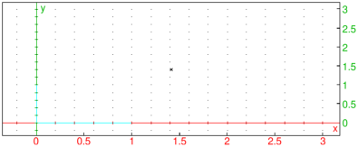
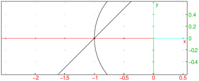

25.6.4 Vectors in the plane
See Section 26.4.4 for vectors in space.
The segment
commands returns and draws
vectors. (The segment command can also draw line segments,
see section 25.6.3.)
-
segment takes two arguments:
- segment(p,v) returns the corresponding vector and
draws it as a line segment from p to p+v.
Example

The vector
command also makes vectors, with a different syntax.
It can take its arguments in two different ways.
-
The coordinates of the vector.
-
vector takes
L, a list of the coordinates of the vector.
- vector(L) returns and draws the vector with the
given coordinates, starting from the origin.
- Two points or a point and a vector.
-
vector takes two arguments:
-
P, a point.
- Q, a point or a vector. If Q is a point, it can
be combined with P in a list.
- vector(P,Q) returns and draws the
corresponding vector. If the arguments are two points, the vector
goes from P to Q. If the arguments are a point and a
vector, then the vector starts at P.
Examples

or:
or:
| V:=vector(1,2+i):; vector(-1,V) |